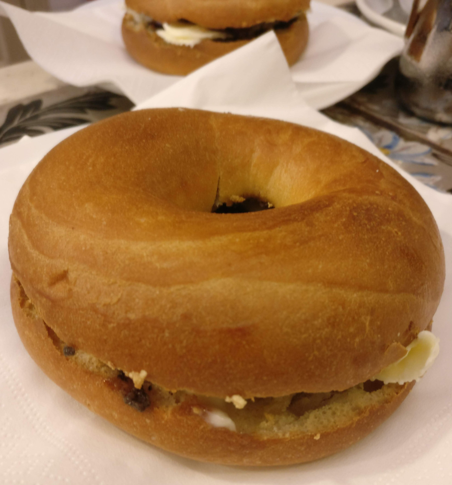

24 Drinks
24.1 Eggnog
Tyvstjålet fra James Price.
- 1/2 l sødmælk
- 1/4 l fløde
- 6 æggeblommer
- 2 dl brun rom
- 1 dl cognac
- 6 æggehvider
- 100 g sukker
- vanillesukker
- Revet muskatnød
Alle ingredienser skal være kolde. Pisk æggeblommer med halvdelen af sukkeret (og vanillen) til det er lyst og luftigt. Bland mælk, fløde og sprit i æggene. Pisk hviderne stive - imens resten af sukkeret hældes i langsomt. Vend marengsen i mælkeæggespritteblandingen. Server med et drys revet muskat. Og nej, det smager ikke af kartoffelmos. Suk.
24.2 Nissepis

- 1 flaske Ribena solbærsaft
- 1 fl.vodka
- 2 hele kanelstænger
- 2 skiver ingefær
- 5 hele nelliker.
Ribena saften simrer med krydderierne i 20 min. Koges ind til ca. det halve.
Står til næste dag hvor den sies, og tilsættes en fl.vodka. Kan drikkes med det samme, men bliver bedre ,hvis den får lov til at stå et par uger.
24.3 Pet Shop Boys inspireret
Fra the royal opeara house i anledning af PSBs koncerter i juli 2024 med barens kommentarer.
24.3.1 It’s a sin
Cherry+vivir tequila + cbd highball
Combining some controversial ingredients to match with a song about guilt and repression stemming from a strict religious upbringing.
24.3.2 Go West
Blueberry & vanillia moscow mule wit east london liquor vodka
A fruity sweet take on a moscow mule from song themed on a soviet pursuit of freedom, hope and a better life
24.3.3 West end girls
Peach & almond mojito with east london liquor rum
Varying flavours combine in a song about the contrasts and challenges of urban life, exploring themes of social class and existential angst in the city.
24.3.4 What have I Done to Deserve this?
Burnt Faith English brandy, apple & caramel fizz
A soothing, comforting cocktail for a song about the emotional struggle and confusion following a relationship breakup.
24.3.5 Always on my mind
Basil & Di Capri Limoncello Tom Collins with Portobello gin.
Zingy and herby expression on a classic cocktail and modern classic song about regret and longing for not showin enough appreciation to a loved one.
24.3.6 Ingefærshots
Justeret fra Valdemarsro.
- 3 dl vand
- 50 g ingefær
- 2 stykker gurkemeje
- 1½ dl frisk citronsaft
- 1 brev kamillete
- 3 stængler frisk timian
- 4 spsk honning
Skræl rodfrugterne, og skær dem i tynde skiver. Hæld vandet over og bring i kog, lad koge under låg i 20 minutter.
Tag gryden af varmen, tilsæt kamilleteen, timianen og citronsaften. Lad det trække mens det køler af til stuetemperatur. Sigt, og rør honning i. Kommes på atamonskyllede flasker.
Opskriften sagde oprindeligt 2 dl citronsaft og 2 spsk honning. Jeg har tilføjet gurkemejen. Det kan godt være man kan klare sig med 1 stk.
24.3.7 Vermut
Det var åbenbart også noget min mor lavede. Eller min far. Den gang i 70’erne.
- 5 kapsler kardemomme
- 7 hele nelliker
- 2 stjerne anis
- 6 enebær
- ½ tsk korianderfrø
- ½ tsk malurt
- ½ tsk kamilleblomster
- 1/4 tsk friskkværnet muskatnød
- Skallen af en hel appelsin
- to strips citron skal
- 3 kanelstænger
- ½ vanillestang
- 1 flaske let hvidvin. Pinot grig.
- 2½ dl sukker
- 2½ dl sød sherry
Knus kardemommen, nellikerne, anisen, enebærrene og korianderen i en morter.
Skrap det i en gryde, tilsæt resten af krydderierne. Hold malurten i en lille gazepose
Hæld hvidvin over og bring i kog. Tag den af varmen, og lad den trække i 24 timer. Fjern posen med malurt efter 12 timer (det er et gæt, da den fik lov at være der hele perioden synes jeg den smagte for meget igennem. Men den skal være der, det er et af de definerende træk ved vermut)
Lav en lys! karamel med sukker og 2 spsk vand. RØR IKKE I KARAMELLEN MENS DEN SMELTER. Tilsæt sherry. Nok lidt mere end 2½ dl - for sidste forsøg endte med en lidt for viskøs vermut. Opløs karamellen i sherryen.
Sigt vinen, tilsæt sirupen. Bum.
24.4 Limoncello
En trøffelbagel.
Vi var i Firenze her i efteråret. For anden gang. Det var lidt fugtigt, og det er det åbenbart ofte om efteråret. Til gengæld er der ingen tvivl i mit sind - Firenze skal besøges i efteråret. Firenze ligger nemlig i norditalien. Det er trøffelland. Og efteråret er højsæson for hvide trøfler.
Det er min mand først fornylig blevet enig med mig i. Det har taget en del tid at få lært ham at spise trøfler.  Men det er slet ikke det der er anledningen her. Det er derimod en ting vi er enige om er godt. Nemlig limoncello. En italiensk citronlikør. Og den kan man lave selv.
Limoncello smager som en alkoholisk limonade. Den er farlig. For det smager som saftevand. Men det er det ikke, hverken det ene eller det andet.
Limoncello laves ikke ved at blande alkohol med en limonade. Den laves ved at lade citronskal trække i alkohol. Og derefter tilsætte sukkeret. Og hvordan gør man så?
Ingredienser:
- 8 økocitroner
- 1 flaske vodka
- 7 dl vand
- 450 gram sukker
Fremgangsmåde:
Vask og skræl citronerne. Undgå at få for meget af det hvide fra skallen med. Smid skrællerne i et stort sylteglas, og hæld vodkaen på. Lad det trække i en uge. Opløs sukkeret i vandet - det kræver at det kommer op at koge. Lad det koge i 15 minutter. Undgå at røre for meget, så du undgår at der er fast, uopløst sukker på kanterne. Lad sukkerlagen køle af. Sigt citronskallen fra alkoholen, og bland sukkerlagen i. Filtrer, hæld på skoldede flasker. Lad likøren, for det er hvad den er, hvile i et par uger. Eller så længe du nu kan vente. Server iskold.
Og her er resultatet. Flaskerne er fra Flaskelandet.dk De bor godt nok i Tyskland, men deres hjemmeside er på dansk, og de er gode at handle med.

24.5 Limoncello - version 2
Mit første forsøg med limoncello var aldeles glimrende. Men der var en enkelt kommentar. Det var ikke stærkt nok. Resultatet holdt vel i omegnen af 20% alkohol. Og den “rigtige” limoncello skal sådan set op på ca. 40%.
Det er ikke let! Man skal have fat på finsprit. Og med lidt held har svigerfamilien været over grænsen, og fundet et par flasker til mig. Ellers må de bestilles i Føtex.
Men opskriften jeg har i sinde at følge når de stærke varer er kommet i hus er som følger:
- Skrællen af to økologiske, ikke-overfladebehandlede citroner.
- To nelliker
- ca. 10 cm kanel
- 50 ml finsprit
Samles i et glas, og opbevares lukket, og i mørke i 8-10 dage.
- 2½ dl vand
- 250 g sukker
Koges sammen, og køler af.
Essensen sies, og hældes sammen med sukkerlagen og 1½ dl finsprit.
Hep! Det giver kun lige under ½ liter. Men det må være nok til det første forsøg.
24.6 Hjemmelavet gin
Når man laver sin egen tonic – så bør man vel også lave sin egen gin.
Gin er basalt set en kryddersnaps, hvor den primære smagsgiver er enebær. Det er sådan set definitionen på gin. Så det er jo ikke fordi det er svært.
Jeg er i den lykkelige situation, at jeg fik en Anova precision cooker i fødselsdagsgave sidste år. Og en af de opskrifter der er i den app der knytter an til den, er på sous vide gin.
Det er helt enkelt: - 3 ounces (88 ml) vodka - 10 korianderfrø - 8 enebær - 2 stk tørret lavendel - 5 hele peberkorn - 2 kardemommekapsler - 1 laurbær
Det hele smides i en pose der sænkes i vand for at få luften ud, og forsegles. Lynlåsposer anbefales. Dernæst får posen 10 minutter i vandbadet ved 80 grader.
Nu havde jeg ikke korianderfrø i huset. Og det lavendel jeg har, er så findelt at jeg aldrig får siet det fra igen.
Så i stedet lavede jeg en tester:
Så skal der bare vodka i! - 90 ml vodka - 8 enebær - 1 laurbærblad - 2 kardemommekapsler - 5 peberkorn
I stedet for at komme det i en lynlåspose, kom det i et sylteglas (160 ml)
I vandet – 80 grader – 10 minutter. Og så på køl, så jeg ikke skulle prøvesmage varm gin.
Der var ærligt talt ikke så mange nuancer i det – andet end peber, som overdøvede alt andet. Så det var rimeligt givet at der skulle skrues kraftigt ned for den.
Jeg havde annonceret dagens projekt på Facebook – og min lillebror, der også er kreativ i et køkken, kommenterede at han havde prøvet. Og at man med fordel kunne fordoble antallet af enebær. Så der blev lavet ti batches med varierende indhold. Basis i dem alle var:
- 1 laurbærblad
- 2 kardemommekapsler
- 16 enebær
- 3 peberkorn
- 90 ml vodka
Og så variationerne:
Batchnumre, og tilsætning:
1 1 allehåndebær 2 2 allehåndebær 3 1 nellike 4 2 nelliker 5 5 fennikelfrø 6 10 fennikelfrø 7 1 lille stjerneanis 8 1 stor stjerneanis 9 5 kommenfrø 10 10 kommenfrø.
Alt på glas, der lukkes og sættes på vandbadet. Et ret stort et af slagsen. Normalt bruger jeg min suppegryde til sousvidingen. Men jeg ville godt lave alle 10 glas på en gang. Jeg kunne selvfølgelig bare lave fem ad gangen. Krydderurterne skal jo filtreres fra, og det kunne jeg passende gøre mens de næste fem kom i gryden. Men bagefter havde jeg planlagt at glassene skulle i brug igen til næste uges morgenmad (man kan ane dele af det på panden i baggrunden). Og der skulle de være i vandet i en time. Og så ville det blive lidt for bøvlet. Så ned i kælderen og finde en termokasse – vi bruger dem når min vi holder fødselsdag for min mand, og hele svigerfamilien + min side er der. Og der derfor skal laves mad til 18 mennesker. Elkedlen op at koge, hælde kogende vand over låget – ja, den kan godt tåle 100 grader. Montere Anovaen, hælde vand i – hold da op hvor skulle der meget vand i. Så støbejernsgryden og et stort sylteglas kom med ned i kassen. Det endte med at se således ud. Det er strengt taget noget rod at sætte en støbejernsgryde i – den kræver ret meget energi at varme op. Der er jeg nok nødt til at finde en mere fiks løsning til næste gang.
Nå. 80 grader. 10 minutter. Alle glassene blev taget op, og indholdet filtreret over på andre glas. Og så var det sådan set bare at vente på at det var blevet så koldt, at man kunne prøvesmage. Jeg har ikke taget billeder af prøverne – de var stort set ens. Det der er pointen er egentlig, at det ligner urinprøver. Det er meget gult, og det kunne nok være interessant at teste hvor farven egentlig kommer fra. Jeg har – baseret på tidligere eksperimenter med pebersnaps – en fornemmelse af at det i ret høj grad er peberen der giver meget af farven.
Anyway. Hvordan smagte det?
Batch 1 og 2. Det var dem med allehånde. Den bliver ret kraftigt krydret. 2 allehåndebær er klart for meget. Og 1 enkelt er faktisk også i overkanten.
Nellikerne i batch 3 og 4. Nelliken er meget tydelig allerede med en enkelt nellike. Så batch nr. 4 smagte ikke overraskende alt for meget af nellike.
Så var der fenikel. Det smagte klart anderledes end de andre udgaver. 10 fennikelfrø er efter min mening ikke for meget.
Stjerneanis. Batch 7 og 8. Der skal helt klart stjerneanis i den endelige opskrift. Men ikke en hel. Den lille smagte af lidt for meget – det skal være gin, ikke ouzo. Så i hvert fald ikke en hel stor stjerneanis.
Kommen. Nixen bixen. Der var ikke meget stor forskel på batch 9 og 10. Men der skal nok ikke kommen i overhovedet.
Samtlige batches, det der var tilbage efter jeg havde prøvesmagt – blev hældt sammen. Der er stadig lidt over halvdelen tilbage. I virkeligheden er jeg mere til rødvin end gin.
Næste forsøg? Ja, jeg skal have lidt styr på hvor farven kommer fra. Jeg tror meget af det kommer fra peberen. Og når jeg egentlig ikke er så meget til peber, så kan det jo være lige meget.
Så skal jeg have styr på kvantificeringen af stjerneanisen. Det er ikke specielt præcist at angive “lille stjerneanis”. Jeg skal have fundet ud af hvordan jeg får skruet ned for nelliken. og allehånden. Og så skal det naturligvis overvejes hvilke andre smagsgivere jeg kan komme i.
24.7 Emergency coolant
Også fra blizzard kogebogen
Emergency Coolant Prep time: 5 mins Makes: 1 serving Pairs well with: Pickle slices; salty snacks; orange wedges - 3 ounces blue sports drink - 1½ ounces tequila - Juice of ½ a lemon - Splash of blue curaçao for extra color - Ice
Lemon sherbet or sorbet Lemon slice for garnishing 1. Combine the sports drink, tequila, lemon juice, and curaçao in a cocktail shaker with some ice and give it a few good shakes to combine. 2. Strain into a rocks glass or tumbler, and top with a few small scoops of lemon sherbet. 3. Garnish with a lemon slice
24.8 Hjemmelavet tonic
Oprindeligt fra 3. februar 2017
I sommers – det vil sige sommeren 2016, var det næsten umuligt at finde et sted hvor man kunne købe kinabark. Det skyldtes, at Politiken havde offentliggjort en artikel, der fortalte hvordan man kunne lave sin egen tonic.
Og så skulle alle hipsterne naturligvis lave deres egen tonic, hvilket var irriterende for mig, for så kunne jeg ikke købe kinabark til at lave min egen tonic. (lad min nu være ærlig, det var ikke noget jeg gjorde før artiklen, jeg fik samme ide som hipsterne).
Men jeg har en god hukommelse, så jeg ventede, og nu er jeg gået igang med at lave min egen tonic. Hipsterne er gået videre til næste mode, og det er igen til at få kinabark.
Jeg startede – det var før jul, med Politikens standardopskrift. Den var OK, men jeg syntes at den smagte for meget af citron(græs). Så nu er jeg gået igang med at udvikle min egen opskrift.
Første forsøg var efter følgende recept:
- 2 stilke citrongræs: 39,3 g
- 6 allehåndebær: 0,4 g
- 1,5 spsk kinabark: 11,3 g
- Citronsyre: 20,0 g
- Stjerneanis: 0,8 g
- Fintrevet skal af 3 økoappelsiner: 16,5 g
- Saften af samme tre appelsiner: 200 ml.
- 1 l vand Alle ingredienser afvejet, og klar til at komme i gryden.
Allehånde og stjerneanis knuses let i morteren. Citrongræs klippes i mindre stykker, og knuses i morteren. Alle øvrige ingredienser hældes i en gryde, der bringes i kog.  Fra gryden kom i kog, kogte den under middel varme i 21 minutter under låg.
Fra gryden kom i kog, kogte den under middel varme i 21 minutter under låg.
Hele balladen blev hældt gennem en sigte, og derefter gennem min superbag. Og derefter gennem kaffefiltre. Jeg tror jeg nåede op på 15 kaffefiltre, og var nødt til at tage en tur til Fakta for at købe flere.
Og så var klokken blevet mange. Der var hældt 1,2 l væske i gryden, og nu var der 850 ml tilbage – kaffefiltrene havde taget deres del. Så det blev hældt på en bluecap flaske, og sat på køl til dagen efter.
Der var lidt snask i bunden af flasken da jeg hælde den i gryden dagen derpå. Og det var blot det der var fint nok til at komme gennem kaffefiltrene. Anyway. 751 gram sukker blev opløst under opvarmning, blandingen blev bragt i kog, der blev skummet af, og siruppen blev hældt på skoldede flasker.
Og hvordan smagte det så? Jeg fortyndede 42 ml sirup med 80 ml danskvand (fra sodastreameren). Og kunne godt fortyndes noget mere. 50 ml af det fortyndede blev fortyndet til 100 ml. Og så var den tættere på det ønskede resultat. Helt så meget skal den nu ikke fortyndes, jeg skal lande på en mellemproportional. Og så kunne den i øvrigt godt bruge noget mere citrongræs. Måske skulle en af appelsinerne erstattes med en citron. Det prøver jeg næste gang. Politiken foreslog at man kunne eksperimentere, og det er præcist hvad jeg har i sinde at gøre. Så næste forsøg får ud over citron(græs) også en sjat tørrede hyldeblomster.
Andre tip? Næste gang prøver jeg nok at skumme af inden blandingen hældes gennem kaffefiltrene. Citronsyre kan man købe i supermarkedet. Eller på nemlig.com. Der koster det 347,50 kr kiloet. Man kan også købe det i Matas. Der koster det 137,50 kr kiloet. Jamen er det ikke farligt? Der er jo en faremærkning på! Jo, det kan give alvorlige øjenirritationer hvis man får det i øjnene. Dr. Oetkers fra supermarkedet giver nøjagtig de samme øjenirritationer. Og når man læser på bøtten fra Matas, står der i øvrigt at citronsyren er af levnedsmiddelkvalitet. Så lad være med at gøre nogen rige på at putte citronsyre i små poser.
Hvor meget får man ud af det? Jeg målte ikke. Men der var nok til at fylde 4 kvartlitersflasker. Og så en sjat til (det var de 42 ml fra tidligere). Jeg skal have set på hvad der egentlig sker af volumenændringer når man opløser sukker i vand.
Bemærk også at jeg har vægtangivelser på her. Politiken angiver et antal stilke citrongræs. Men der er katten til forskel på sådan nogen stilke. De fortæller også at man skal bruge 1½ spsk kinabark. Men hvor meget er det? Vægt angivelser er langt mere præcise og reproducerbare.
Lige hvad kinabarken angår. Der testede jeg faktisk. Jeg tog en spsk (det er i øvrigt 15 ml) kinabark 20 gange, og vejede det. Det gav følgende resultater (alle mål i gram):
8,5 7,5 7,3 7,9 7,8 6,5 7,4 8,1 7,7 7,6 6,8 7,5 7,5 7,0 6,8 7,6 7,9 7,6 7,3 7,7
Se, det er pænt store variationer. Der er tal mellem 6,5 og 8,5 gram. Hvis Politiken brugte det mindste mål, og jeg brugte det største – så er det en forskel på vores opskrifter på 30%. Det er faktisk ret meget.
Så i stedet regnede jeg snittet ud – det er 7,5 g pr 15 milliliter. Eller 0,5 gram/ml. Og når Politiken angiver at man skal bruge 1½ spsk – hvilket så svarer til 22,5 ml, finder man ud af at der bør vejes 11,25 g kinabark af. Så præcis er min vægt ikke, så det blev til 11,3 g.
24.9 Eggnog
Oprindeligt fra julen 2017
Eggnog. Jeg har et eller andet sted godt vidst at det eksisterede. Det optræder jo i utallige amerikanske film. Men jeg har faktisk aldrig smagt det. Nu er det jul. Så nu skal det prøves. Jeg har researchet lidt, og kombineret et par forskellige opskrifter. Så der er ikke nogen jeg lige kan henvise til.
Ingredienser: - 4 æggeblommer - 75 gram sukker - 4 dl mælk - 3 hele nelliker - ½ vanilliestang - ½ tsk stødt kanel - 2 dl rom (eller brandy) - 2 dl piskefløde (det er hvad der passer med min sifon) - Et par strøg revet muskatnød.
Proces: Vanillestangen flækkes og kornene skrabes ud. Fordel dem i sukkerret. Pisk blommerne og vanillesukkeret sammen til en luftig æggesnaps. Mælken, den nu tomme vanillestang og krydderierne koges op - kun lige til kogepunktet! Mælken hældes (langsomt!) over til æggene. Lad den passere gennem en si, så nellikerne og vanillestangen ikke kommer med. Der røres, og det hele skal så tilbage på blusset, hvor der (langsomt!) varmes op til ca. 65 grader. Det skal kun lige tykne, det er hverken en creme anglaise eller røræg vi er ved at lave. Kør det gennem sien igen og sæt det på køl. Når det er koldt røres rom i, og det fordeles i glas. Giv det en god klat flødeskum på toppen (jeg bruger sifonen) og pynt med endnu et strøg muskatnød.
24.10 Hjemmelavet Gin del II. Hvor kommer farven fra?
Jeg fik ikke rigtigt vist et billede af hvordan resultatet så ud i mit opslag om at lave sin egen gin. Lad os bare sige at det ligner en urinprøve.
Nu er gin normalt ikke farvet. Så hvor kommer farven fra? Fra tidligere eksperimenter med pebersnaps – de gentages ikke – ved jeg at peber kan farve ret godt. Men der kunne være tale om andre ting også. Så det måtte prøves.
Jeg skulle lave sous vide cheesecake alligevel, og det skal gøres ved samme temperatur som når der laves gin. Så det var oplagt lige at køre et lille eksperiment. Bare lidt hurtigt, for jeg var kommet lidt sent igang.
Her er forberedelsen: 
Fra venstre mod højre, 2 enebær, 2 peberkorn og 2 allehånde bær. Dertil 50 ml vodka. Det hele i mine små henkogningsglas, låg på, i vand (80 grader, 10 minutter). Det var i hvert fald planen. Noget gik galt med tidtagningen i appen til Anovaen. Så de fik snarere et kvarter end 10 minutter.
Det gør ikke noget. Det jeg er ude efter er at identificere hvilket krydderi der giver farven. Hvis det allehånde farver mere end de andre efter 15 minutter, så gør allehånde det også efter 10 minutter. Det er den relative forskel jeg er ude efter. Ja, der kan være forskelle hvis det egentlige farvestof ligger dybt i bærret, og først trækker ud sent i forløbet. Men det er så korte tidsrum vi har gang i her, at det næppe gør en forskel.
Og hvordan så det så ud? Således:
Allehånde – stort set ingen farvning. Peber – en smule. Farven kommer helt klart fra enebærrene. Og da der skal ret mange af dem i, er der nok ingen vej uden om at min gin kommer til at ligne en urinprøve.
Hvorfor er gin så ikke farvet? Det er der også nogen mærker der er. Den primære forskel er nok, at det meste gin vi køber, er destilleret gin. Den rå sprit trækker med de urter der tilsættes. Og så destilleres den igen. Smagsstofferne følger med. Og hvis farvestofferne er tilstrækkeligt “tunge” og ikke følger med, ja så er der ikke meget farve på slutresultatet.
24.11 Apricot Danish Old Fashioned
- 5 cl whiskey. Stauning mener det skal være deres Høst Whiskey
- 1 barske Creme d’abricot liqueur
- 1 barske Orgeat sirup
Bland ingredienserne i et isfyldt tumblerglas, rør og server. Pynt med et drys kardemomme eller birkes.
24.12 KAOS Manhattan
- 5 cl stauning kaos whiskey
- 2 cl Sød vermut
- 2 stænk Angostura bitter
Kom ingredienserne i et mixerglas med isterninger, og rør rundt. Si over i et coupeglas. Pynt med et maraschino-kirsebær